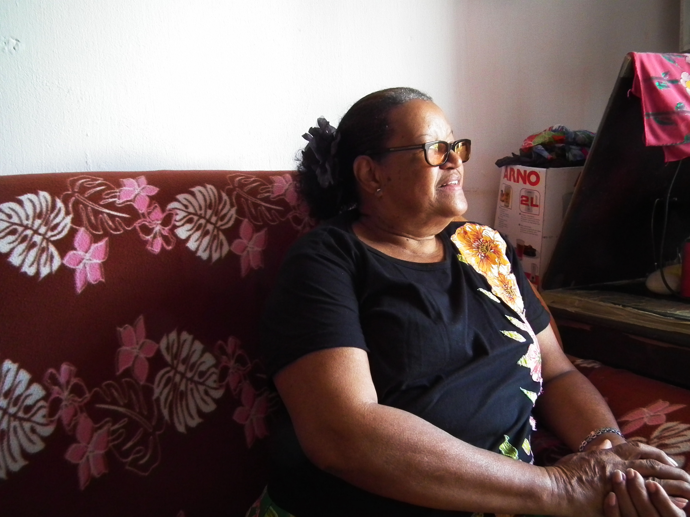
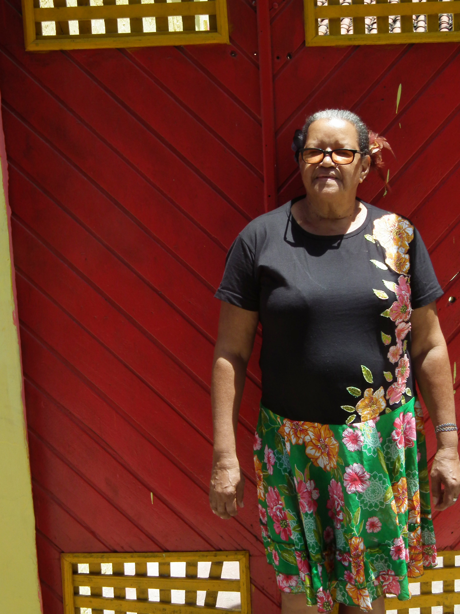

A saia era florida e a camisa preta, também com algumas flores, combinava. “Se tem uma coisa que eu não suporto é a tal da entrevista”, vai logo dizendo. Mas, apesar de dizer que não gosta de dar entrevistas, Áurea da Conceição de Assis ou Aurinha do Coco, como é conhecida, não economiza no verbo.
“Não quero mais cantar”. Essa foi uma das primeiras coisas que Aurinha falou ao sentarmos, antes mesmo de começar de fato a perguntar tudo o que estava no meu roteiro. “Não dão mais valor pra gente, sabe? Cantei na Fenearte em Julho e até agora [estamos em setembro] não recebi. Eu cantei com Selma do Coco”, criticava Aurinha enquanto já deixava claro a sua importância artística.
A Aurinha das emboladas e rodas de coco teve sua carreira musical iniciada em um cenário completamente diferente do que ela está acostumada hoje em dia. Incentivada por seus irmãos, Aurinha começou a cantar como contra-auto no coral de São Pedro Mártir, sob os cuidados do mestre Nataniel Mendes. Na época fumava dois maços de cigarro por dia. Foi o amor pela música que a fez parar com o vício. Com o coral, teve a oportunidade de conhecer os Estados Unidos, algo que não se concretizou por causa do marido que não permitiu.
O marido em questão era o filho de Selma do Coco com o qual passou treze anos casada e teve duas filhas, Amanda e Andreza. Foi então que Aurinha passou a acompanhar Selma. A primeira memória que vem da parceria é na Festa da Lavadeira, onde as duas cantavam dentro das poças de lama, tomando choque, tudo para animar a celebração Com o passar dos anos, a parceria foi ficando cada vez mais forte. Os shows era embaixo de sol, chuva e sereno. Com a idade avançada de Selma, Aurinha passou a ser um pilar muito forte para a amiga. “Eu via que ela tava meio cansadinha, então Selma abria os shows e eu segurava”, relembra. “Ela não aguentava, assim como eu não aguento mais hoje em dia. Embolada cansa, meu filho”, Aurinha enfatiza sua fala no alto de seus 64 anos.
“Selma era uma mãe para mim. Foi com quem aprendi tudo”. Mesmo com os quase treze anos que cantou ao lado da amiga, Aurinha escutou da pessoa que chama de mãe que ela “iria formar uma banda porque tinha inveja”. Mas a consideração e o amor por Selma passava por cima disso. Foi em nome desse sentimento que a resposta ao afronte não foi dada ali naquele momento. Veio em forma de música, tempos depois, em um show no qual estavam Selma e o ex-marido:
“É né nega safada!”, Aurinha relembra em meio a risos a resposta de Selma para a música. E, apesar dos impasses, ai de quem disser que Selma não foi a primeira coquista do Amaro Branco. Jovelina? Nem pensar. “Nesses vários anos que andei com Selma vi o quanto ela era querida. Selma foi a primeira coquista que colocou a gente para a frente”, afirma.
Depois que saiu da parceria com Selma, Aurinha formou seu grupo o Quebra-coco. Logo depois o conjunto muda de nome, após ser batizado por Alceu como Rala-coco, com o qual Aurinha trabalha até hoje.
O primeiro disco, intitulado “Eu avistei”, de 2004, foi uma produção independente. O trabalho teve participação de Naná Vasconcelos, Josildo Sá e Climério Pessoa. O segundo disco, intitulado “Seu grito”, foi gravado em 2007, com patrocínio da Chesf, e teve cinco mil cópias prensadas. Com este álbum e com a música que dá título a ele, Aurinha colheu frutos e fez seu nome ser reconhecido pelo Brasil.
A canção “Seu grito” surgiu após um projeto encabeçado pela Prefeitura de Olinda, no qual coquistas foram incubidos de gravar duas músicas, uma sobre a AIDS e outra sobre a violência. Para Aurinha a tarefa não foi fácil. A inspiração para a canção sobre violência veio a partir de uma família vizinha.
“Eles tinham uma sobrinha linda que tinha acabado o noivado. Um dia estávamos todos reunidos brincando no Clube Vassourinhas. Lá pelas 2h, ela decide ir embora. Todo mundo tava dizendo para ela não ir. Mas ela foi. E depois só escutamos os comentários: ‘mataram!’. O ex-noivo queria reatar o relacionamento, mas ela disse que não queria e ele matou ela na hora”, relembra a história que inspirou sua música. “Uma voz veio e me disse ‘seu grito silenciou’, conta apontando para o braço todo arrepiado com a lembrança. E foi daí que nasceu “Seu grito”:
Apesar de cantar sobre a violência contra a mulher e de ser mulher negra no meio da cultura popular, nos seus 30 anos de carreira, Aurinha não se recorda de ter sofrido por sua condição. “Pelo contrário, sempre fui muito respeitada. Quando me chamam de neguinha é sempre com carinho, nunca quiseram me diminuir por conta disso não”, alega a cantora. “Amo minha cor”, afirma enquanto mostra o braço com manchas de queimaduras do sol que já estão sendo tratadas.
A inspiração vem do dia-a-dia e das coisas ao seu redor. Da água-de-coco na praia a uma xícara caindo dentro de casa, tudo é motivo para virar letra. Tem orgulho em dizer que os cocos já vêm prontos com letra e melodia. Também se orgulha em não precisar de ensaios para subir no palco. “Às vezes a gente ensaia e acontece alguma besteira. Eu mesma não ensaio mais”, afirma.
Em meio a tantas memórias e sorrisos o discurso da precariedade que é viver da música popular volta à tona. O cansaço fica evidente na fala de Aurinha. “Já não to aguentando mais a mesmice e as humilhações que a gente passa para conseguir show. Eu não to mais afim disso não”, afirma. “No começo eu mesma que tinha que ir fazendo meus batente para ir subindo os degraus até porque não dava para pagar um produtor”, relembra a cantora. Ela conta que atualmente seus músicos são seus sobrinhos e sua maior preocupação é em pagar bem a eles, afinal, como ela mesma diz, “Aurinha não é nada no palco sem os seus músicos”.
Hoje já pensa na aposentadoria. “Se eu cantar eu como, se eu não cantar eu não como”, brinca. A brincadeira é um exagero da cantora, mas retrata a situação em que muitos artistas pernambucanos, principalmente os que seguem na trilha da cultura popular, se encontram. Sem renda mensal, Aurinha vive dos picolés que vende - que são famosos no Amparo e atrai gente que vem de longe para comprar.
A falta de valorização fez com que a artista tomasse a decisão de não atualizar mais a pasta de patrimônio vivo - ganhou o título da Fundarpe em 2009. Em tese, o título tem como objetivo reconhecer e valorizar as manifestações populares e tradicionais da cultura pernambucana, além de garantir que artistas desses segmentos repassem seus conhecimentos às novas gerações. Mas para Aurinha o nome do título deveria ser “patrimônio morto”.
“Eles só dão esse título para quem já está com o pé na cova. Deveriam dar o título também para gente de menos idade que está mais disposto e tem algo mais a oferecer”, critica a coquista. “Se você chegar para perguntar quem é Aurinha do Coco ninguém sabe quem é. Pensam que eu vendo coco”, brinca, apesar do problema. Aurinha usa como exemplo a filha Andreza, que aprendeu a tocar de um tudo com ela e também é amante do coco. Ela tem o sonho de formar um projeto com crianças no bairro, mas não tem condições financeiras.
Aurinha também tem o título de Mestre Griô, que recebeu pelas mãos de Beth de Oxum. A Lei dos Mestres Griôs, aprovada em 2014, é responsável por dar o título para os cidadãos que, através da oralidade, da corporeidade e da vivência, dialoga, aprende e transmite saberes e fazeres da cultura popular, de geração em geração, garantindo a ancestralidade e a identidade do seu povo.
Apesar das desilusões com a falta de investimento na cultura, Aurinha ainda não parou de sonhar. A coquista ainda pensa em projetos futuros e em um novo disco quem sabe? Já tem claro o que quer: inovar no coco. Quer colocar guitarra, baixo e bateria no meio das entoadas - algo que já vem fazendo no palco há algum tempo. E, para quem acha que é loucura da coquista e que os instrumentos não combinam com o ritmo, ela usa logo o exemplo do show que fez ao lado de mestre Galo Preto, no Teatro de Santa Isabel. No evento teve tudo isso e foram aplaudidos de pé pelo público. No entanto, o sonho esbarra na falta de oportunidade e de financiamento para sair do campo das ideias. Funcultura não lhe é atraente porque não sabe fazer e nem tem quem faça o seu projeto.
Mesmo com tantos obstáculos o coco é a essência de Aurinha. É o que define sua identidade. “O coco para mim é tudo. É com o coco que me realizo”, afirma. Diferente da maioria dos coquistas atuais que herdam o espaço no coco, Aurinha teve que conquistar o seu. Aurinha veio de uma época em que havia apenas meia dúzia de coquistas, que hoje são referência e encarregados de transmitir o legado do coco de roda.
Naná Vasconcelos foi uma das pessoas-chave na carreira de Aurinha, que o considerava um de seus três mestres - os outros diz que são primeiramente Deus e depois seu pai. Quando se lembra de Naná vem logo um suspiro de saudade dos muitos anos ao lado do grande amigo.
“Ele me dava muito valor. Ele dizia que coquistas em olinda tinham vários, mas que as únicas que ele considerava de verdade era Dona Aurinha e Dona Jovelina do Amaro Branco”, conta. “Era uma amizade muito boa, uma amizade muito sadia”, relembra.
A parceria com o músico foi abrangente. Com a banda Girassol, liderada por Naná, Aurinha teve encontros musicais com nomes como Gal Costa e Gilberto Gil. Mais tarde, o percussionista foi responsável por produzir os dois únicos discos da carreira de Aurinha.
Com Alceu Valença, Aurinha participou doando sua voz no CD “Forró para todos os tempos”, na faixa intitulada “Côco do Rala Côco”.
As parcerias eram algo que Aurinha fazia com muito gosto. “Chegavam pra mim e diziam ‘Aurinha canta comigo?’ e eu dizia ‘simbora!’. Eu faço tudo isso com amor, sem ambição”, afirma.
Nascida e criada no bairro do Amparo, em Olinda, Aurinha tem uma verdadeira relação de “amor e ódio” com a cidade em que vive. Passou no Amparo os 64 anos de sua vida e, mesmo com as críticas, de lá não pretende sair.
“Eu sou muito revoltada com Olinda. Era pra investir muito nos artistas locais. Nós somos um celeiro de bons compositores, de bons músicos. Agora estão todos morrendo sem mostrar o seu trabalho”, critica. “Amo minha Olinda que é o lugar onde vim ao mundo, mas coitada”, pondera Aurinha.
A coquista lembra que no passado tinha muito o que se ver na cidade diferentemente de hoje em dia. “Na época de Naná você brincava nos Quatro Cantos. Você chegava no Amaro Branco tinha uma sambada. Ia na casa de Beth [de Oxum], tinha outra sambada. No Largo do Amparo tinha alguma coisa. Hoje não tem mais nada, nem para quem é daqui nem para turista”, alega.
Mesmo nascida na cidade com um dos maiores carnavais do Brasil, Aurinha não gosta da festa. “Mas tá, é a época do ano que eu mais canto”, pondera. Diz que só fica na cidade durante o carnaval por causa do trabalho. “Se não fosse isso eu ia mimbora”.
Há 14 anos em prática, é quase impossível imaginar uma cena cultural para Pernambuco tal como ela se apresenta hoje em dia se não fosse pelo Funcultura. Hoje, ele é o principal mecanismo de incentivo à produção, difusão, pesquisa e formação cultural no estado. No entanto, mesmo diante da sua importância para quem vive de cultura, o programa é uma ferramenta que está longe de propiciar iguais condições de acesso a todos os artistas e produtores.
Ao acessar o site do Ministério da Cultura de Pernambuco, é informado que pode se inscrever no Funcultura qualquer pessoa física ou jurídica, residente em Pernambuco há pelo menos um ano, inscrita e em situação regular no Cadastro de Produtores Culturais (CPC), que deve ser renovado anualmente e que O produtor cultural é quem apresenta o projeto ao Funcultura, por meio de inscrição nos editais públicos. O grande problema reside justamente na elaboração desses projetos.
“Se você não tiver instrução, você de forma nenhuma será autor de um projeto. É preciso conhecimento de como se faz orçamento, de tributação, de definição de objetivos. Assim como a maioria dos programas culturais, o Funcultura não é acessível. Ele foi construído para pessoas que tenham conhecimentos mínimos dessa esfera”, afirma a produtora cultural Eva Duarte. Ainda assim, na seletiva de 2016/2017 foram recebidos 1.488 projetos, um aumento de 17,88% no comparativo com o Edital anterior. Desses, foram classificados 1281.
Com o incentivo cultural do Funcultura foi possível criar uma máquina que fez surgir uma mão-de-obra especializada no setor. “Com o programa começou-se a profissionalizar uma cadeia produtiva que vai além do grupo ou artista que produz. Mas se formou a duras penas, já que não temos aqui um curso de formação em produção cultural, como na UFBA, por exemplo. Eu mesma tive que descobrir como se fazia na tora”, afirma Eva.
A implementação da mentalidade da cultura enquanto produto comercial foi um dos principais pontos positivos trazidos pelo Funcultura. “É preciso entender a cultura como mercado. O grande problema é essa dissociação. Cinema é o maior orçamento do edital e é o que mais impacta no orçamento nacional. Os programas como Funcultura servem para legitimar essa ideia de que com cultura faz dinheiro e, assim, entrar nessa lógica capitalista que vivemos”, aponta a jornalista e produtora Bruna Leite.
Atualmente, o Funcultura é segmentado em três grandes nichos. O primeiro é o do audiovisual, que ganha desde 2007, um edital próprio para o segmento. A partir de 2016, o segmento musical passou também a contar com edital próprio. Os outros segmentos culturais compartilham o mesmo edital, mas há a divisão orçamentária para cada arte. O Funcultura ainda separa uma fatia do orçamento para o fomento cultural no interior do estado.
Para os três editais de 2016/2017, foram destinados ao todo R$ 42,2 milhões, dos quais R$ 20,5 milhões foram para o audiovisual; R$ 4,55 milhões para música e R$ 17,5 milhões para o edital geral. O valor total representa um aumento de 5,6% no investimento em relação à 2015.